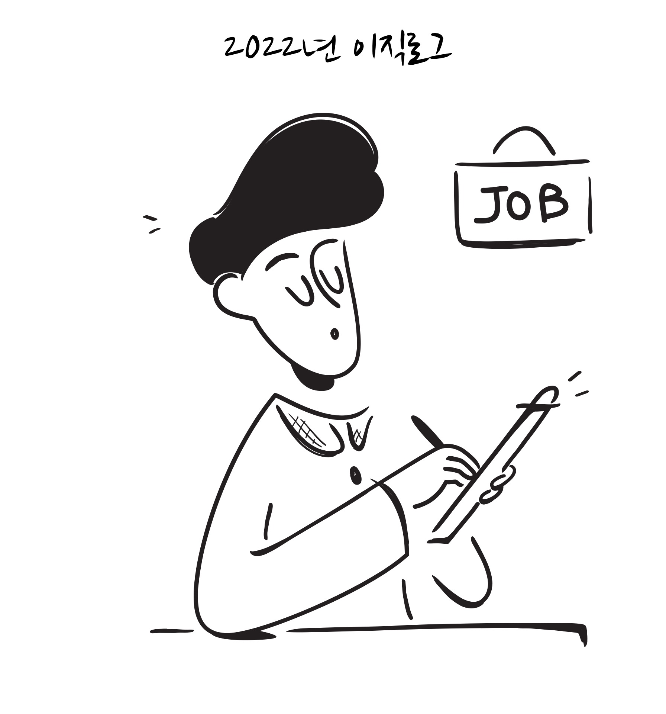
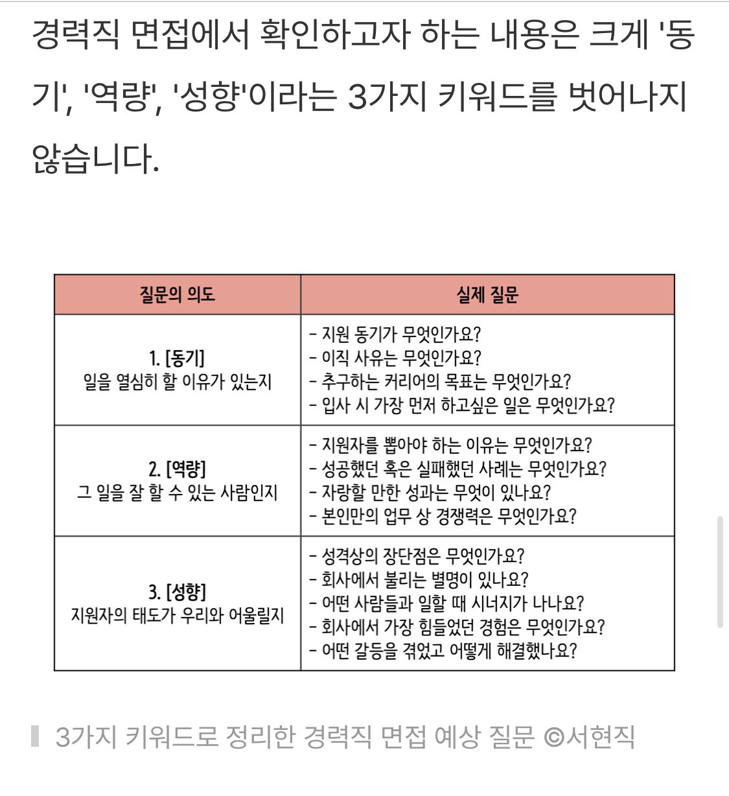

<!DOCTYPE html>
<html xmlns="http://www.w3.org/1999/xhtml" lang="ko" xml:lang="ko"><head>

<meta charset="utf-8">
<meta name="generator" content="quarto-1.2.280">

<meta name="viewport" content="width=device-width, initial-scale=1.0, user-scalable=yes">

<meta name="author" content="방태모">
<meta name="description" content="Data Scientist 이직 로그">

<title>방태모의 블로그 - 2022년 이직 로그</title>
<style>
code{white-space: pre-wrap;}
span.smallcaps{font-variant: small-caps;}
div.columns{display: flex; gap: min(4vw, 1.5em);}
div.column{flex: auto; overflow-x: auto;}
div.hanging-indent{margin-left: 1.5em; text-indent: -1.5em;}
ul.task-list{list-style: none;}
ul.task-list li input[type="checkbox"] {
  width: 0.8em;
  margin: 0 0.8em 0.2em -1.6em;
  vertical-align: middle;
}
</style>


<script src="../../site_libs/quarto-nav/quarto-nav.js"></script>
<script src="../../site_libs/quarto-nav/headroom.min.js"></script>
<script src="../../site_libs/clipboard/clipboard.min.js"></script>
<script src="../../site_libs/quarto-search/autocomplete.umd.js"></script>
<script src="../../site_libs/quarto-search/fuse.min.js"></script>
<script src="../../site_libs/quarto-search/quarto-search.js"></script>
<meta name="quarto:offset" content="../../">
<link href="../../images/favicon.png" rel="icon" type="image/png">
<script src="../../site_libs/cookie-consent/cookie-consent.js"></script>
<link href="../../site_libs/cookie-consent/cookie-consent.css" rel="stylesheet">
<script src="../../site_libs/quarto-html/quarto.js"></script>
<script src="../../site_libs/quarto-html/popper.min.js"></script>
<script src="../../site_libs/quarto-html/tippy.umd.min.js"></script>
<script src="../../site_libs/quarto-html/anchor.min.js"></script>
<link href="../../site_libs/quarto-html/tippy.css" rel="stylesheet">
<link href="../../site_libs/quarto-html/quarto-syntax-highlighting.css" rel="stylesheet" class="quarto-color-scheme" id="quarto-text-highlighting-styles">
<link href="../../site_libs/quarto-html/quarto-syntax-highlighting-dark.css" rel="prefetch" class="quarto-color-scheme quarto-color-alternate" id="quarto-text-highlighting-styles">
<script src="../../site_libs/bootstrap/bootstrap.min.js"></script>
<link href="../../site_libs/bootstrap/bootstrap-icons.css" rel="stylesheet">
<link href="../../site_libs/bootstrap/bootstrap.min.css" rel="stylesheet" class="quarto-color-scheme" id="quarto-bootstrap" data-mode="light">
<link href="../../site_libs/bootstrap/bootstrap-dark.min.css" rel="prefetch" class="quarto-color-scheme quarto-color-alternate" id="quarto-bootstrap" data-mode="dark">
<script id="quarto-search-options" type="application/json">{
  "location": "navbar",
  "copy-button": false,
  "collapse-after": 3,
  "panel-placement": "end",
  "type": "overlay",
  "limit": 20,
  "language": {
    "search-no-results-text": "No results",
    "search-matching-documents-text": "matching documents",
    "search-copy-link-title": "Copy link to search",
    "search-hide-matches-text": "Hide additional matches",
    "search-more-match-text": "more match in this document",
    "search-more-matches-text": "more matches in this document",
    "search-clear-button-title": "Clear",
    "search-detached-cancel-button-title": "Cancel",
    "search-submit-button-title": "Submit"
  }
}</script>
<script async="" src="https://www.googletagmanager.com/gtag/js?id=G-1QHE9697JG"></script>

<script type="text/plain" cookie-consent="tracking">

window.dataLayer = window.dataLayer || [];
function gtag(){dataLayer.push(arguments);}
gtag('js', new Date());
gtag('config', 'G-1QHE9697JG', { 'anonymize_ip': true});
</script>

<script type="text/javascript" charset="UTF-8">
document.addEventListener('DOMContentLoaded', function () {
cookieconsent.run({
  "notice_banner_type":"simple",
  "consent_type":"implied",
  "palette":"light",
  "language":"en",
  "page_load_consent_levels":["strictly-necessary","functionality","tracking","targeting"],
  "notice_banner_reject_button_hide":false,
  "preferences_center_close_button_hide":false,
  "website_name":""
  });
});
</script> 
  


<link rel="stylesheet" href="../../css/karat.css">
</head>

<body class="floating nav-fixed">

<div id="quarto-search-results"></div>
  <header id="quarto-header" class="headroom fixed-top">
    <nav class="navbar navbar-expand-lg navbar-dark ">
      <div class="navbar-container container-fluid">
      <div class="navbar-brand-container">
    <a class="navbar-brand" href="../../index.html">
    <span class="navbar-title">방태모의 블로그</span>
    </a>
  </div>
          <button class="navbar-toggler" type="button" data-bs-toggle="collapse" data-bs-target="#navbarCollapse" aria-controls="navbarCollapse" aria-expanded="false" aria-label="Toggle navigation" onclick="if (window.quartoToggleHeadroom) { window.quartoToggleHeadroom(); }">
  <span class="navbar-toggler-icon"></span>
</button>
          <div class="collapse navbar-collapse" id="navbarCollapse">
            <ul class="navbar-nav navbar-nav-scroll ms-auto">
  <li class="nav-item">
    <a class="nav-link" href="../../index.html">
 <span class="menu-text">홈</span></a>
  </li>  
  <li class="nav-item">
    <a class="nav-link" href="../../blog.html">
 <span class="menu-text">블로그</span></a>
  </li>  
  <li class="nav-item">
    <a class="nav-link" href="../../archive.html">
 <span class="menu-text">아카이브</span></a>
  </li>  
  <li class="nav-item dropdown ">
    <a class="nav-link dropdown-toggle" href="#" id="nav-menu-" role="button" data-bs-toggle="dropdown" aria-expanded="false">
 <span class="menu-text">리소스</span>
    </a>
    <ul class="dropdown-menu dropdown-menu-end" aria-labelledby="nav-menu-">    
        <li>
    <a class="dropdown-item" href="../../research.html">
 <span class="dropdown-text">연구 아카이브</span></a>
  </li>  
        <li>
    <a class="dropdown-item" href="../../presentation.html">
 <span class="dropdown-text">발표 아카이브</span></a>
  </li>  
        <li>
    <a class="dropdown-item" href="https://be-favorite.tistory.com/">
 <span class="dropdown-text">과거 기술블로그</span></a>
  </li>  
    </ul>
  </li>
</ul>
              <div class="quarto-toggle-container">
                  <a href="" class="quarto-color-scheme-toggle nav-link" onclick="window.quartoToggleColorScheme(); return false;" title="Toggle dark mode"><i class="bi"></i></a>
              </div>
              <div id="quarto-search" class="" title="Search"></div>
          </div> <!-- /navcollapse -->
      </div> <!-- /container-fluid -->
    </nav>
</header>
<!-- content -->
<div id="quarto-content" class="quarto-container page-columns page-rows-contents page-layout-article page-navbar">
<!-- sidebar -->
  <nav id="quarto-sidebar" class="sidebar collapse sidebar-navigation floating overflow-auto">
    <nav id="TOC" role="doc-toc" class="toc-active">
    <h2 id="toc-title">목차</h2>
   
  <ul>
  <li><a href="#이직-로그" id="toc-이직-로그" class="nav-link active" data-scroll-target="#이직-로그">이직 로그</a>
  <ul class="collapse">
  <li><a href="#이직을-결심한-이유" id="toc-이직을-결심한-이유" class="nav-link" data-scroll-target="#이직을-결심한-이유">이직을 결심한 이유</a></li>
  <li><a href="#지원-기준" id="toc-지원-기준" class="nav-link" data-scroll-target="#지원-기준">지원 기준</a></li>
  <li><a href="#이직-참고-자료" id="toc-이직-참고-자료" class="nav-link" data-scroll-target="#이직-참고-자료">이직 참고 자료</a>
  <ul class="collapse">
  <li><a href="#이력서" id="toc-이력서" class="nav-link" data-scroll-target="#이력서">이력서</a></li>
  <li><a href="#자기소개서" id="toc-자기소개서" class="nav-link" data-scroll-target="#자기소개서">자기소개서</a></li>
  <li><a href="#면접" id="toc-면접" class="nav-link" data-scroll-target="#면접">면접</a></li>
  </ul></li>
  </ul></li>
  <li><a href="#g마켓으로의-이직-여정" id="toc-g마켓으로의-이직-여정" class="nav-link" data-scroll-target="#g마켓으로의-이직-여정">G마켓으로의 이직 여정</a>
  <ul class="collapse">
  <li><a href="#서류-전형" id="toc-서류-전형" class="nav-link" data-scroll-target="#서류-전형">서류 전형</a></li>
  <li><a href="#차-면접" id="toc-차-면접" class="nav-link" data-scroll-target="#차-면접">1차 면접</a></li>
  <li><a href="#차-면접-1" id="toc-차-면접-1" class="nav-link" data-scroll-target="#차-면접-1">2차 면접</a></li>
  <li><a href="#최종-합격-및-처우-협의" id="toc-최종-합격-및-처우-협의" class="nav-link" data-scroll-target="#최종-합격-및-처우-협의">최종 합격 및 처우 협의</a></li>
  </ul></li>
  <li><a href="#맺음말" id="toc-맺음말" class="nav-link" data-scroll-target="#맺음말">맺음말</a></li>
  </ul>
<div class="toc-actions"><div><i class="bi bi-github"></i></div><div class="action-links"><p><a href="https://github.com/be-favorite/Blog/issues/new" class="toc-action">Report an issue</a></p></div></div></nav>
</nav>
<!-- margin-sidebar -->
    <div id="quarto-margin-sidebar" class="sidebar margin-sidebar">
    </div>
<!-- main -->
<main class="content" id="quarto-document-content">

<header id="title-block-header" class="quarto-title-block default">
<div class="quarto-title">
<h1 class="title">2022년 이직 로그</h1>
  <div class="quarto-categories">
    <div class="quarto-category">Memory</div>
  </div>
  </div>

<div>
  <div class="description">
    <p>Data Scientist 이직 로그</p>
  </div>
</div>


<div class="quarto-title-meta">

    <div>
    <div class="quarto-title-meta-heading">Author</div>
    <div class="quarto-title-meta-contents">
             <p>방태모 </p>
          </div>
  </div>
    
    <div>
    <div class="quarto-title-meta-heading">Published</div>
    <div class="quarto-title-meta-contents">
      <p class="date">2023년 1월 1일</p>
    </div>
  </div>
  
    
  </div>
  

</header>

<div class="quarto-figure quarto-figure-center">
<figure class="figure">
<p><a href="https://notioly.com"></a></p>
<p></p><figcaption class="figure-caption">The illustration by Mary Amato</figcaption><p></p>
</figure>
</div>
<p>이직을 결심하고 생각보다 빠른 시기에 결실을 맺을 수 있었습니다. 작년 2월 즈음 이직을 확고하게 결심하고, 8월 4일 G마켓 Data Scientist 포지션에 최종 합격 통보를 받을 수 있었는데요. 이직을 결심한 구체적인 이유, 나만의 지원 기준 등을 담은 이직 로그와 G마켓으로의 이직 여정에 대해 적어보려고 합니다.</p>
<section id="이직-로그" class="level1">
<h1>이직 로그</h1>
<section id="이직을-결심한-이유" class="level2">
<h2 class="anchored" data-anchor-id="이직을-결심한-이유">이직을 결심한 이유</h2>
<p>첫 번째로 이제 더이상 이 곳<a href="#fn1" class="footnote-ref" id="fnref1" role="doc-noteref"><sup>1</sup></a>에서는 성장할 수 없을 것 같다는 확신이 있었기 때문입니다. 연구원 각자 독립적으로 연구 과제를 맡아 업무를 하다보니, 제가 맡고 있는 연구 주제로 데이터 분석과 모델링을 하고 고민하는 지점이 있을 때 함께 Discuss를 할 사람이 없었습니다. 훌륭한 멘토의 존재까지 바란 것은 아닙니다. 그러나, 풀고자 하는 문제에 대해 함께 이야기하고 해결책을 나눠보는 상대가 없다는 것은, 아직 부족한 제가 Method 적인 측면에서 홀로 연구를 수행하며 장벽을 마주하곤 할 때마다 더 깊은 갈증으로 느껴졌습니다.</p>
<p>두 번째 이유는 센터 내부적으로 제가 완전히 무지한 연구 분야로의 연구 전문성을 키우고자 하는 계획있었기 때문입니다. 이 부분에서 한 번 더 확신을 했습니다. 2023년에도 이 곳에 머물러 있을 경우, 내가 기여할 수 있는 바는 더 적어질 것이고 이에 따라 개인의 성장 또한 정체될 것이다. 과연 이 일이 내가 하고 싶은 일이 맞는지에 관한 고민도 더더욱 커질 것이라 생각했습니다. 써놓고 보니 첫 번째 이유와 연결이 되는군요.</p>
<p>제 애정이 깃들어있는 첫 직장에 대해 안좋은 뉘앙스의 이야기만 한 것 같아서 몇 가지 장점을 짤막하게 덧 붙여 써봅니다. 먼저, 분위기가 자유롭고 수평적입니다. 서로 터치하는 바도 없고 연구원 끼리 위계 관계 없이 상호존중을 해주시는 분들로 구성이 되어 있습니다. 자신이 맡고 있는 과제만 잘 처리하면 되는 근무 환경입니다. 그리고, 무엇보다 가장 중요한 학계 내에서 제공 받을 수 있는 임금 수준에서는 최고 수준으로 대우를 해준다고 말씀드릴 수 있습니다. 출퇴근 시간도 자유롭구요. 또한, 석사를 갓 졸업하고 현업에 첫 발은 내딛은 제게 연구 과제를 단독으로 맡겨주신 센터장 정재훈 교수님께 감사한 마음을 가지고 있습니다. 어떤 사람에게는 막중한 업무 부담으로 다가왔을 수도 있겠지만, 제가 당시에 가장 잘 할 자신이 있는 연구 분야<a href="#fn2" class="footnote-ref" id="fnref2" role="doc-noteref"><sup>2</sup></a>였기 때문에 그 부담감을 조금이나마 즐길 수 있었던 것 같습니다. 1년반이라는 시간동안 분명히 여러가지 느낀 바, 성장한 바가 많았습니다.</p>
</section>
<section id="지원-기준" class="level2">
<h2 class="anchored" data-anchor-id="지원-기준">지원 기준</h2>
<p>학계보다 비교적 빠르게 변화하는 환경인 산업계에서 일을 해보고 싶었습니다. 조금 더 구체적으로 말해보자면, 산업계에서 유의미한 지표 설계, A/B 테스트 결과를 바탕으로 한 통계적 가설검정과 인과추론 등을 수행해보고 싶었습니다. 그래서, 제조업 기반의 회사는 최대한 피하고 온라인 서비스를 바탕으로 비즈니스를 하는 기업으로 가고 싶다는 막연한 생각을 가지고 있었어요. 아울러, 온라인 서비스가 비즈니스 모델인 기업이 전사 차원에서 조금이라도 더 데이터 기반 의사 결정 문화가 확립되어 있지 않을까 하는 생각도 가지고 있었습니다. 저는 당시 산업계에 몸을 담은 적도, 여러 분야의 기업들에서 일을 해본 적도 없으므로 온전히 제 개인적인 추정이였습니다.😂</p>
<p>마지막으로 가지고 있었던 또 하나의 지원 기준은 채용 공고의 디테일이었습니다. 채용 공고에 쓰여진 지원 자격, 세부 직무 내용에 관한 디테일이 곧 그 조직에서 해당 포지션을 얼마나 필요로 하고 있는 지를 나타내 준다고 생각합니다. 다시 말하면, 그 포지션의 필요성에 대해 얼마나 고민했는 지를 나타내준다고 봐요. 그래서, 늘 채용 공고는 꼼꼼하게 읽어봤던 것 같습니다. 잘 쓰여진 채용 공고는 더 많은 지원자들, 더 수준 높은 지원자들의 어플라이를 이끌어 낼 수 있다고 생각합니다.😀</p>
<p>앞서 말씀 드린 정도의 지원 기준은 꽤 불확실하다고 생각하시는 분들도 있을 것 같습니다. 이미 눈치 채신 분들도 있으시겠지만, 저는 가고 싶은 기업이나 세부 분야를 특정해 본 적이 없었던 사람입니다. 이를 특정하지 못했던 이유를 요즘 들어 생각해봤어요. 곰곰이 생각해보니 학부생때 부터 Data Science/Analysis를 일로 삼고싶다는 생각만 했지, Data Science/Analysis라는 도구를 활용해서 어떤 문제를 해결하고 싶은 건지에 관한 고민은 결코 깊게 해본 적이 없더군요. 분야를 막론한 수많은 기업들이 왜 Data Science/Analysis에 관심을 두고 있고 이를 통해 구체적으로 어떤 Business problem을 풀고자 하는 지, 구체적인 성공 사례는 어떤 것들이 있는 지에 관한 관심 또한 없었죠. 그래서, 자연스레 가고 싶은 기업, 특정 산업 분야를 정하지 못하지 않았나 생각합니다. 이 부분을 정하고 차근차근 준비를 해나가야 채용 시장에서 유리한 포지션을 가져갈 수 있다고 생각을 하고 있거든요. 저는 그러한 포지션을 갖춰 나가지 못했던 사람이고요. 그래서, 이직 준비를 하면서도 꽤나 막막했습니다. 제가 가지고 있던 주 무기(e.g.&nbsp;R, 시계열 자료분석)들은 온라인 서비스를 통해 비즈니스를 하고 있는 기업의 Data Scientist/Analyst 포지션에서 요구하는 핵심 역량은 아니었거든요.😀 데이터 사이언티스트, 데이터 분석가가 되고 싶다는 꿈을 품었던 학부생 때부터, 어떤 문제를 해결하고 싶은 지에 대해 고민했다면 어땠을까 하는 조금의 후회가 남네요.</p>
</section>
<section id="이직-참고-자료" class="level2">
<h2 class="anchored" data-anchor-id="이직-참고-자료">이직 참고 자료</h2>
<section id="이력서" class="level3">
<h3 class="anchored" data-anchor-id="이력서">이력서</h3>
<p>저는 이력서를 노션으로 정리하고 있습니다. 노션으로 to do list, 주간 회고 등을 관리하고 있었기 때문에 익숙한 도구이기도 했고, 이력서를 노션으로 관리하고 있는 개발자 분들도 꽤나 있으시더 군요. 그래서, 이력서 관리를 어떤 도구로 할 지에 대한 고민은 길지 않았습니다. 이력서와 포트폴리오 제작기는 <a href="https://www.taemobang.com/posts/2022-06-08-monthly-memory-202204/#이력서-포트폴리오-제작기">지난 4월 회고록</a>에 상세하기 기재해두었습니다. 관심있으신 분들은 참고해보시기 바랍니다. 제 최신 이력서는 <a href="https://taemobang.notion.site/">여기</a>서 만나보실 수 있습니다. 꼭 구직 활동을 시작할 때에만 이력서를 정리한다기 보다는 주기적으로 업데이트 해나가시는 것을 권합니다.</p>
</section>
<section id="자기소개서" class="level3">
<h3 class="anchored" data-anchor-id="자기소개서">자기소개서</h3>
<p>요즘 자유 양식의 이력서, 자기소개서를 요구하는 곳도 점점 늘어나고 있어 크게 도움이 되실 지는 모르겠지만, 참고했던 자료들을 나열해두겠습니다. 저는 자유 양식의 자기소개서를 작성할 때에도 꽤나 도움을 받았습니다.</p>
<ul>
<li><p><a href="https://youtu.be/PS93IYAAs48">AND (ft.인싸담당자) &lt;마스터 자소서 | EP 03. 입사후포부&gt;</a></p>
<ul>
<li>입사 후 포부 항목가 막막하신 분들께 추천합니다.</li>
</ul></li>
<li><p><a href="https://youtu.be/blGokSb2vso">면접왕 이형 &lt;면접관이 싹 정리해주는 뽑아쓰면되는 지원동기 5가지&gt;</a></p>
<ul>
<li><p>지원 동기에 관한 5가지 고리를 알려줍니다. 자신에게 맞는 고리를 가져다 쓰면 됩니다. 지원 동기는 자유 양식의 자기소개서에서도 매우 중요하다고 생각합니다. 꼭 보셨으면 하는 영상입니다.</p></li>
<li><p>그 외 <a href="https://www.youtube.com/@leebro_interview">면접왕 이형 채널</a>에는 구직자에게 정말 도움이 될만한 영상들이 많습니다. 자기소개서나 면접 준비할 때 가장 추천하고 싶은 채널입니다.</p></li>
</ul></li>
</ul>
</section>
<section id="면접" class="level3">
<h3 class="anchored" data-anchor-id="면접">면접</h3>
<ul>
<li><p>제출한 이력서, 자기소개서, 포트폴리오로부터 예상 질문 정리하고 답변 생각해보기</p></li>
<li><p>다음의 질문 리스트에 관한 답 생각해보기</p>
<div class="quarto-figure quarto-figure-center">
<figure class="figure">
<p></p>
<p></p><figcaption class="figure-caption">3가지 키워드로 정리한 경력직 면접 예상 질문 (서현직)</figcaption><p></p>
</figure>
</div></li>
<li><p><a href="https://www.youtube.com/watch?v=DSBJXuDyDOY">AND (ft.인싸담당자) &lt;면접에서 합격하는 1분자기소개, 이 영상 하나로 종결 (5가지 방법 + 예시)&gt;</a></p>
<ul>
<li>면접을 시작할 때 자기소개를 부탁하지 않는 경우는 없다고 생각합니다. 면접 질문을 미리 예상하고, 답변을 외우는 형태로 면접을 준비하는 것은 개인적으로 권하지 않지만 1분 자기소개 정도는 외울 가치가 있다고 생각합니다. 1분 자기소개로부터 나오는 꼬리 질문들은 자기 페이스대로 면접을 끌고갈 수 있게해주기 때문입니다.</li>
</ul></li>
<li><p>임원 면접(2차면접) 팁</p>
<ul>
<li><p>아래 영상들을 보시면 임원 면접에서 보고자하는 결이 무엇인지 파악하실 수 있을 겁니다. 실무진 면접(1차 면접)에서 보고자 하는 바도 자연스레 아실 수 있을 겁니다.</p></li>
<li><p><a href="https://www.youtube.com/watch?v=DXgI9MjzfgI&amp;list=WL&amp;index=53">AND (ft.인싸담당자) &lt;임원면접에서 합격하는 사람들은 무엇이 다를까? 최종 관문만 넘고 취뽀하자!&gt;</a></p></li>
<li><p><a href="https://www.youtube.com/watch?v=BNARRy6B3nw&amp;list=WL&amp;index=54">AND (ft.인싸담당자) &lt;임원면접 가기 전, 시간 없다면 이 영상만이라도! 임원면접 금기사항 3가지!&gt;</a></p></li>
<li><p><a href="https://www.youtube.com/watch?v=h6Q_9G5Al9A&amp;list=WL&amp;index=55">AND (ft.인싸담당자) &lt;Jacob도 감탄한 면접만 20번 떨어진 대기업 합격자의 임원면접 꿀팁!! [면접 꿀 TIP]&gt;</a></p></li>
<li><p><a href="https://www.youtube.com/watch?v=Y0gg_KdXTaI&amp;list=WL&amp;index=54">드림즈크루 &lt;실무진 면접과 임원 면접은 어떻게 다를까? 차이를 알면 합격이 보여요.&gt;</a></p></li>
<li><p><a href="https://www.youtube.com/watch?v=rBa1Rtl-KMU">면접왕 이형 &lt;임원면접관이 뽑을 수 밖에 없는 면접준비방법&gt;</a></p></li>
<li><p><a href="https://www.youtube.com/watch?v=QHUTd_zj8nE&amp;list=WL&amp;index=62">취업사이다 &lt;전 삼성 인성 면접관 나상무 선생님이 말해주는 면접관의 합격 결정 그래프 [렛유인 실시간 취업고민상담소 EP.99]&gt;</a>: 강력 추천드립니다.😀</p></li>
</ul></li>
</ul>
</section>
</section>
</section>
<section id="g마켓으로의-이직-여정" class="level1">
<h1>G마켓으로의 이직 여정</h1>
<p>7월 5일에 마감이었던 G마켓 Data Scientist 채용 공고를 6월이 끝나갈 무렵 접하고, 어떤 때보다 설레는 마음으로 서류 전형을 준비했던 기억이 아직도 생생합니다. 이 설레는 마음이 진심이 담긴 지원 동기로 이어졌던 것으로 기억하고 있어요. 여기서는 G마켓에 지원하며 각 전형에서 준비했던 것들과 느꼈던 바들을 간략하게 이야기해보고자 합니다.</p>
<section id="서류-전형" class="level2">
<h2 class="anchored" data-anchor-id="서류-전형">서류 전형</h2>
<p>6월 즈음 인과추론에 큰 관심을 가지게 되었는데<a href="#fn3" class="footnote-ref" id="fnref3" role="doc-noteref"><sup>3</sup></a>, 인과추론이라는 키워드를 채용 공고에서 접하고 설레는 마음으로 서류 준비를 했던 기억이 새록새록 납니다. 제가 지원을 했던 당시에는 채용 사이트 리뉴얼 전으로 자사 이력서 양식으로 지원을 했습니다.<a href="#fn4" class="footnote-ref" id="fnref4" role="doc-noteref"><sup>4</sup></a> 지금은 자유 양식으로도 이력서를 받아 주는 것으로 알고 있습니다. 당시 이력서에 포트폴리오 링크를 첨부할 수 있는 란이 있어, 노션 이력서와 포트폴리오 링크, 개인 블로그 링크를 적어냈던 것으로 기억합니다. 그리고, 자기소개서는 최대 1000자의 자유형식이어서 지원 동기와 직무 경험을 정리해서 제출했습니다.</p>
</section>
<section id="차-면접" class="level2">
<h2 class="anchored" data-anchor-id="차-면접">1차 면접</h2>
<p>다대일 면접으로 1시간 동안 진행됐습니다. 본격적인 면접 시작 전에 충분히 편안한 마음을 가질 수 있게끔 아이스브레이킹을 해주셨던 기억이 납니다. 그리고, 가장 기억에 남는 말은 면접관과 구직자 입장이 갑과 을의 관계로 생각하는 경우가 있는데 그렇게 생각하지 않았으면, 그리고 우리와 fit이 잘 맞는지 대화한다고 생각해줬으면 한다고 먼저 말씀을 먼저 해주셨던 것입니다. 그 분이 지금은 제 팀장님이 되셨네요.😀 덕분에 정말 편하게 면접을 진행할 수 있었던 것 같습니다. 그리고, 자기소개와 제 대표 프로젝트를 설명하는 것으로 면접을 시작했습니다. 자세한 질문들은 공개적인 자리라 쓰지 못하는 부분을 양해해주셨으면 합니다.</p>
<p>개인적으로 기술적인 디테일이나 이런저런 일들을 했다고 나열하는 식의 What에 집중하는 면접 스타일 보다는, 왜 문제 정의를 이렇게 했고, 왜 그 방법론을 사용했으며 그 과정 속에서 어떤 고민을 해서 어떤 결과물을 산출해낼 수 있었는지와 같이 Why와 How에 집중하는 면접을 선호하는데, 제가 선호하는 형태의 질문들을 많이 받을 수 있었습니다. 그래서, 가장 좋았던 면접 경험이라고 기억하고 있지 않나 싶습니다. 면접 준비를 하실 때에는 What을 나열하는 것에 끝나는 것이 아닌, Why와 How를 통해서 내가 어떤 난관에 당면했었는지, 그리고 그 순간에 왜 그런 선택을 했는지에 대해 곰곰이 돌이켜 보시기 바랍니다. 1시간 동안의 면접이었는데 시간 가는 줄 모르고 이야기를 나누었네요.</p>
</section>
<section id="차-면접-1" class="level2">
<h2 class="anchored" data-anchor-id="차-면접-1">2차 면접</h2>
<p>2차 면접은 2대1 면접으로 진행될 예정이었으나, 한분의 사정으로 인해 1대1로 진행되었습니다. 마찬가지로 1시간 동안 진행을 했고요. 상세하게 본인 소개를 해주셨고, 내가 속하게 될 팀과 어떤 관계에 있고 함께 어떤 일을 하는지 까지 먼저 설명을 해주셨습니다. 이 부분에서 어느정도 긴장을 풀 수 있었던거 같아요. 1차 면접과 마찬가지로 면접자를 본인과 동등한 입장에서 존중해주시는 느낌을 받았습니다. 마찬가지로 자기소개로 시작을 했습니다.</p>
<p>아, 그리고 면접 때 팁?..이라고 할까요. 하나 말씀드리고 싶은게 있습니다. 저는 긴장하면 말이 빨라지는 습관이 있습니다. 그래서, 과거 면접에서 경험했던 것들을 보면 이 습관으로 인해 내가 말하고자 하는 바와는 저 멀리 머리는 아니라고 말하는데 입은 이미 움직이고 있었던.. 그런 경험이 있습니다. 그래서, 올해 이직 과정에서 면접을 준비하며 가장 먼저 머릿 속에 넣어놨던 바는 면접관의 질문에서 묻는 것이 무엇인지 충분히 생각하고 의도적으로 천천히 침착하게 답변하자는 것이었습니다. 전혀 예상하지 못한 질문이 나왔을 때는 당황하지 않고, 조금만 생각할 시간을 달라고 요청하기도 했습니다. 성급한 답변은 면접에서의 본인의 일관성을 깨뜨리는 답변을 야기할 수 있으므로 정말 조심하는게 좋다고 생각합니다.😀 머리는 아니라고하는데 입이 움직이고 있는 상황은 다시 생각해도 끔찍하네요.</p>
<p>2차 면접은 다른 임원 면접 스타일과 같이 실무와 관련한 기술적 질문이 아닌 좀 더 일반적인 형태의 질문을 많이 받았습니다. 지원동기는 당연한 것이고, 가치관이나 제가 지금까지 삶을 살아옴에 있어서 했던 선택들(e.g.&nbsp;통계학 전공을 택한 이유, 대학원 진학 이유)에서 왜 그러한 선택을 했는지에 대해 주로 질문을 받았습니다. 재밌었습니다. 과거를 돌이켜보면 제 인생에 있어서 중요한 결정들은 주변의 의견은 딱히 신경을 쓰지 않고, 모두 제가 맞다고 생각하는 부분으로 선택을 해왔습니다. 선택하기 전에는 물론 충분한 시간의 심사숙고의 과정이 있었고요. 그래서, 면접에서 이러한 질문을 받는 것이 두렵지 않고 오히려 즐거웠던 것 같습니다. 제 과거에 했던 생각들, 가치관의 형성 과정들을 면접관님이 집중해서 들어주시고 꼬리 질문을 해주시는게 오히려 감사하기도 했고요.😂 1차 면접과 2차 면접 모두 정말 후회없이 봤던 면접으로 기억하고 있습니다. 그래서, 최종 합격 통보를 받기 전에, 만약 결과가 불합격일 경우 내가 현재 가진 역량이 부족해서이지 결코 면접을 못봐서는 아니라는 생각을 가지고 있었습니다.</p>
</section>
<section id="최종-합격-및-처우-협의" class="level2">
<h2 class="anchored" data-anchor-id="최종-합격-및-처우-협의">최종 합격 및 처우 협의</h2>
<p>2차 면접을 보고 이틀 뒤에 채용 담당자 분의 전화로 최종 합격 통보를 받았습니다. 제가 하고싶은 일을 할 수 있는 포지션으로 가게 됐다는 생각에 너무나도 기뻤습니다. 최종 합격 후 처우 협의 과정에서도 존중받는다는 느낌을 정말 많이 받았습니다. 당시 제 근로 소득을 증빙하는 과정에서 조금 복잡한 부분들이 많이 있어서 증빙할 자료도 많이 필요했었는데, 담당자분께서 이 상황을 이해해주시고 많은 얘기들을 천천히 들어주셨습니다. 그래서, 처음이라 더욱 걱정스러웠던 처우 협의도 원활하게 마무리할 수 있었습니다. 1차면접부터 최종합격, 처우협의까지 구직자를 진심으로 존중해준다는 느낌을 계속해서 받았습니다. 이 글을 쓰며 다시 한 번 돌이켜본 기억에도, G마켓으로의 이직 여정은 정말 좋은 기억들로만 가득 채워져 있네요.</p>
</section>
</section>
<section id="맺음말" class="level1">
<h1>맺음말</h1>
<p>오늘은 2022년에 겪었던 약 6개월간의 이직 여정에 대해 이야기해보았습니다. 석사 졸업 후 현업 1년차에 이직 준비를 한다는게 누군가 봤을 때는 무리수라고 생각할 수도 있지만, 저는 이직을 결심한 후 곧바로 액션에 옮겼습니다. 빠른 액션을 취하지 않으면, 당시 제가 하고 있던 일이 가장 잘할 자신이 있었던 Comfort zone 내에 존재하고 있는 일이었기에 편안함에 심취하여 오히려 이직 열망을 감소시킬 거라고 생각했습니다. 아울러, 제가 이직하고자 하는 곳과는 관련성이 깊은 일을 하고 있었던 상황도 아니었구요. 1년을 바라보고 준비했는데 생각보다 빨리 결실을 맺어 너무나도 기뻤습니다. 그것도 제가 당시 가장 잘할 자신이 있었던 일은 아닌, 잘 하고 싶었던 일을 할 수 있는 포지션으로의 이직이었기에 더더욱 뜻깊었습니다. 어느덧 이직한지 4개월입니다. 4개월 동안 정말 깨달은 바도 많고, 성장한 바도 많습니다. 아직 어렵고 힘든 부분이 더 많지만, 이직 1년차에는 제가 어떤 일을 하고 있을지, 얼마나 성장해있을지 더더욱 기대가 됩니다. G마켓을 이용하는 “고객분들의 쇼핑 경험을 더 즐겁게” 만드는 데에 일조할 수 있도록, 앞으로도 끊임없이 노력하고 성장할 것입니다.</p>


</section>


<div id="quarto-appendix" class="default"><section id="footnotes" class="footnotes footnotes-end-of-document" role="doc-endnotes"><h2 class="anchored quarto-appendix-heading">Footnotes</h2>

<ol>
<li id="fn1"><p>가천대 길병원 인공지능빅데이터융합센터<a href="#fnref1" class="footnote-back" role="doc-backlink">↩︎</a></p></li>
<li id="fn2"><p>환경 역학 분야에서의 시계열 추론 모델링. 환경 역학 분야는 처음이었지만, 그래도, 대학원을 졸업할 무렵 제가 가장 자신있었던 연구분야가 곧 시계열 자료분석이었기 때문입니다. 동시에, 학계로의 취업을 전혀 생각하고 있지 않던 제가 당시 해당 포지션에 지원한 가장 큰 이유이기도 합니다.<a href="#fnref2" class="footnote-back" role="doc-backlink">↩︎</a></p></li>
<li id="fn3"><p>인과추론에 관심을 가지게 된 자세한 이유는 <a href="https://careerly.co.kr/comments/61331?utm_campaign=self-share">커리어리</a>에서 만나보실 수 있습니다.<a href="#fnref3" class="footnote-back" role="doc-backlink">↩︎</a></p></li>
<li id="fn4"><p>참고로, 현재는 지마켓 <a href="https://corp.gmarket.com">기업 사이트</a>, <a href="https://careers.gmarket.com">채용 사이트</a> 둘 다 리뉴얼된 상태입니다. 현재 채용은 자유 이력서도 받아주는 것으로 알고 있습니다.😀 관심있으신 분들은 둘러보시기 바랍니다.<a href="#fnref4" class="footnote-back" role="doc-backlink">↩︎</a></p></li>
</ol>
</section><section class="quarto-appendix-contents"><h2 class="anchored quarto-appendix-heading">Reuse</h2><div quarto-reuse="quarto-reuse" class="quarto-appendix-contents"><a rel="license" href="https://creativecommons.org/licenses/by/4.0/deed.ko">https://creativecommons.org/licenses/by/4.0/deed.ko</a></div></section><section class="quarto-appendix-contents"><h2 class="anchored quarto-appendix-heading">Citation</h2><div><div class="quarto-appendix-secondary-label">BibTeX citation:</div><pre class="sourceCode code-with-copy quarto-appendix-bibtex"><code class="sourceCode bibtex">@online{방태모,
  author = {방태모},
  title = {2022년 이직 로그},
  date = {},
  url = {https://taemobang.com/posts/2023-01-01-move-to-another-company/},
  langid = {ko}
}
</code><button title="Copy to Clipboard" class="code-copy-button"><i class="bi"></i></button></pre><div class="quarto-appendix-secondary-label">For attribution, please cite this work as:</div><div id="ref-방태모" class="csl-entry quarto-appendix-citeas" role="doc-biblioentry">
방태모. n.d. <span>“2022년 이직 로그.”</span> <a href="https://taemobang.com/posts/2023-01-01-move-to-another-company/">https://taemobang.com/posts/2023-01-01-move-to-another-company/</a>.
</div></div></section></div></main> <!-- /main -->
<link rel="stylesheet" href="https://cdnjs.cloudflare.com/ajax/libs/font-awesome/6.1.1/css/all.min.css" integrity="sha512-KfkfwYDsLkIlwQp6LFnl8zNdLGxu9YAA1QvwINks4PhcElQSvqcyVLLD9aMhXd13uQjoXtEKNosOWaZqXgel0g==" crossorigin="anonymous" referrerpolicy="no-referrer">
    
<div>
<hr>

<p> 새 글이 발행되면 알려드려요.  </p>

<iframe id="beehiiv-form" src="https://embeds.beehiiv.com/312bf770-2ddc-411b-b3b9-92b811774acc?slim=true" data-test-id="beehiiv-embed" frameborder="0" scrolling="no" style="margin: 0; border-radius: 0px !important; background-color: transparent; height: 55px;"></iframe>

<p> 포스팅을 독려해주실 수 있어요.  </p>

<script type="text/javascript" src="https://cdnjs.buymeacoffee.com/1.0.0/button.prod.min.js" data-name="bmc-button" data-slug="taemobang" data-color="#06436e" data-emoji="☕" data-font="Lato" data-text="Support me" data-outline-color="#ffffff" data-font-color="#ffffff" data-coffee-color="#FFDD00" data-height="40px"></script>

</div>
<script id="quarto-html-after-body" type="application/javascript">
window.document.addEventListener("DOMContentLoaded", function (event) {
  const toggleBodyColorMode = (bsSheetEl) => {
    const mode = bsSheetEl.getAttribute("data-mode");
    const bodyEl = window.document.querySelector("body");
    if (mode === "dark") {
      bodyEl.classList.add("quarto-dark");
      bodyEl.classList.remove("quarto-light");
    } else {
      bodyEl.classList.add("quarto-light");
      bodyEl.classList.remove("quarto-dark");
    }
  }
  const toggleBodyColorPrimary = () => {
    const bsSheetEl = window.document.querySelector("link#quarto-bootstrap");
    if (bsSheetEl) {
      toggleBodyColorMode(bsSheetEl);
    }
  }
  toggleBodyColorPrimary();  
  const disableStylesheet = (stylesheets) => {
    for (let i=0; i < stylesheets.length; i++) {
      const stylesheet = stylesheets[i];
      stylesheet.rel = 'prefetch';
    }
  }
  const enableStylesheet = (stylesheets) => {
    for (let i=0; i < stylesheets.length; i++) {
      const stylesheet = stylesheets[i];
      stylesheet.rel = 'stylesheet';
    }
  }
  const manageTransitions = (selector, allowTransitions) => {
    const els = window.document.querySelectorAll(selector);
    for (let i=0; i < els.length; i++) {
      const el = els[i];
      if (allowTransitions) {
        el.classList.remove('notransition');
      } else {
        el.classList.add('notransition');
      }
    }
  }
  const toggleColorMode = (alternate) => {
    // Switch the stylesheets
    const alternateStylesheets = window.document.querySelectorAll('link.quarto-color-scheme.quarto-color-alternate');
    manageTransitions('#quarto-margin-sidebar .nav-link', false);
    if (alternate) {
      enableStylesheet(alternateStylesheets);
      for (const sheetNode of alternateStylesheets) {
        if (sheetNode.id === "quarto-bootstrap") {
          toggleBodyColorMode(sheetNode);
        }
      }
    } else {
      disableStylesheet(alternateStylesheets);
      toggleBodyColorPrimary();
    }
    manageTransitions('#quarto-margin-sidebar .nav-link', true);
    // Switch the toggles
    const toggles = window.document.querySelectorAll('.quarto-color-scheme-toggle');
    for (let i=0; i < toggles.length; i++) {
      const toggle = toggles[i];
      if (toggle) {
        if (alternate) {
          toggle.classList.add("alternate");     
        } else {
          toggle.classList.remove("alternate");
        }
      }
    }
    // Hack to workaround the fact that safari doesn't
    // properly recolor the scrollbar when toggling (#1455)
    if (navigator.userAgent.indexOf('Safari') > 0 && navigator.userAgent.indexOf('Chrome') == -1) {
      manageTransitions("body", false);
      window.scrollTo(0, 1);
      setTimeout(() => {
        window.scrollTo(0, 0);
        manageTransitions("body", true);
      }, 40);  
    }
  }
  const isFileUrl = () => { 
    return window.location.protocol === 'file:';
  }
  const hasAlternateSentinel = () => {  
    let styleSentinel = getColorSchemeSentinel();
    if (styleSentinel !== null) {
      return styleSentinel === "alternate";
    } else {
      return false;
    }
  }
  const setStyleSentinel = (alternate) => {
    const value = alternate ? "alternate" : "default";
    if (!isFileUrl()) {
      window.localStorage.setItem("quarto-color-scheme", value);
    } else {
      localAlternateSentinel = value;
    }
  }
  const getColorSchemeSentinel = () => {
    if (!isFileUrl()) {
      const storageValue = window.localStorage.getItem("quarto-color-scheme");
      return storageValue != null ? storageValue : localAlternateSentinel;
    } else {
      return localAlternateSentinel;
    }
  }
  let localAlternateSentinel = 'default';
  // Dark / light mode switch
  window.quartoToggleColorScheme = () => {
    // Read the current dark / light value 
    let toAlternate = !hasAlternateSentinel();
    toggleColorMode(toAlternate);
    setStyleSentinel(toAlternate);
  };
  // Ensure there is a toggle, if there isn't float one in the top right
  if (window.document.querySelector('.quarto-color-scheme-toggle') === null) {
    const a = window.document.createElement('a');
    a.classList.add('top-right');
    a.classList.add('quarto-color-scheme-toggle');
    a.href = "";
    a.onclick = function() { try { window.quartoToggleColorScheme(); } catch {} return false; };
    const i = window.document.createElement("i");
    i.classList.add('bi');
    a.appendChild(i);
    window.document.body.appendChild(a);
  }
  // Switch to dark mode if need be
  if (hasAlternateSentinel()) {
    toggleColorMode(true);
  } else {
    toggleColorMode(false);
  }
  const icon = "";
  const anchorJS = new window.AnchorJS();
  anchorJS.options = {
    placement: 'right',
    icon: icon
  };
  anchorJS.add('.anchored');
  const clipboard = new window.ClipboardJS('.code-copy-button', {
    target: function(trigger) {
      return trigger.previousElementSibling;
    }
  });
  clipboard.on('success', function(e) {
    // button target
    const button = e.trigger;
    // don't keep focus
    button.blur();
    // flash "checked"
    button.classList.add('code-copy-button-checked');
    var currentTitle = button.getAttribute("title");
    button.setAttribute("title", "Copied!");
    let tooltip;
    if (window.bootstrap) {
      button.setAttribute("data-bs-toggle", "tooltip");
      button.setAttribute("data-bs-placement", "left");
      button.setAttribute("data-bs-title", "Copied!");
      tooltip = new bootstrap.Tooltip(button, 
        { trigger: "manual", 
          customClass: "code-copy-button-tooltip",
          offset: [0, -8]});
      tooltip.show();    
    }
    setTimeout(function() {
      if (tooltip) {
        tooltip.hide();
        button.removeAttribute("data-bs-title");
        button.removeAttribute("data-bs-toggle");
        button.removeAttribute("data-bs-placement");
      }
      button.setAttribute("title", currentTitle);
      button.classList.remove('code-copy-button-checked');
    }, 1000);
    // clear code selection
    e.clearSelection();
  });
  function tippyHover(el, contentFn) {
    const config = {
      allowHTML: true,
      content: contentFn,
      maxWidth: 500,
      delay: 100,
      arrow: false,
      appendTo: function(el) {
          return el.parentElement;
      },
      interactive: true,
      interactiveBorder: 10,
      theme: 'quarto',
      placement: 'bottom-start'
    };
    window.tippy(el, config); 
  }
  const noterefs = window.document.querySelectorAll('a[role="doc-noteref"]');
  for (var i=0; i<noterefs.length; i++) {
    const ref = noterefs[i];
    tippyHover(ref, function() {
      // use id or data attribute instead here
      let href = ref.getAttribute('data-footnote-href') || ref.getAttribute('href');
      try { href = new URL(href).hash; } catch {}
      const id = href.replace(/^#\/?/, "");
      const note = window.document.getElementById(id);
      return note.innerHTML;
    });
  }
  const findCites = (el) => {
    const parentEl = el.parentElement;
    if (parentEl) {
      const cites = parentEl.dataset.cites;
      if (cites) {
        return {
          el,
          cites: cites.split(' ')
        };
      } else {
        return findCites(el.parentElement)
      }
    } else {
      return undefined;
    }
  };
  var bibliorefs = window.document.querySelectorAll('a[role="doc-biblioref"]');
  for (var i=0; i<bibliorefs.length; i++) {
    const ref = bibliorefs[i];
    const citeInfo = findCites(ref);
    if (citeInfo) {
      tippyHover(citeInfo.el, function() {
        var popup = window.document.createElement('div');
        citeInfo.cites.forEach(function(cite) {
          var citeDiv = window.document.createElement('div');
          citeDiv.classList.add('hanging-indent');
          citeDiv.classList.add('csl-entry');
          var biblioDiv = window.document.getElementById('ref-' + cite);
          if (biblioDiv) {
            citeDiv.innerHTML = biblioDiv.innerHTML;
          }
          popup.appendChild(citeDiv);
        });
        return popup.innerHTML;
      });
    }
  }
});
</script>
<script src="https://giscus.app/client.js" data-repo="be-favorite/Blog" data-repo-id="R_kgDOH0qA6g" data-category="Comments" data-category-id="DIC_kwDOH0qA6s4CReuX" data-mapping="pathname" data-reactions-enabled="1" data-emit-metadata="0" data-input-position="top" data-theme="light" data-lang="ko" crossorigin="anonymous" async="">
</script>
</div> <!-- /content -->
<footer class="footer">
  <div class="nav-footer">
      <div class="nav-footer-center"><div class="cookie-consent-footer"><a href="#" id="open_preferences_center">Cookie Preferences</a></div></div>
  </div>
</footer>


</body></html>